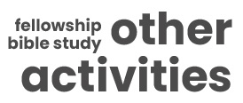

The Metropolitan Bible Baptist Church Toronto is an independent church holding fast in the fundamental truths of the
King James Version of the Bible. We are a Bible-believing, Soul-winning, family-oriented and Christ-centered church.
We are committed to spreading the good news of salvation through faith in the Lord Jesus Christ.
We are located in the North York area of the city of Toronto. We are a Filipino congregation reaching out to everybody regardless of culture or nationality.
For counseling and advice, and to know more about our church and ministries, please call (647) 220-5609 or email us at info@mbbctoronto.ca
and ask for Pastor Gamy Romano. We welcome you to our church website and we hope that you will find all the information you need.
Pastor's Desk
A Place of Spiritual Guidance and Inspiration
In the heart of every church, there exists a sacred space that serves as the focal point of spiritual leadership and guidance—the pastor's desk. This unassuming piece of furniture holds a unique significance in the life of a congregation, as it is where the pastor prepares sermons, offers counsel, and nurtures the spiritual well-being of their flock. In this article, we delve into the deeper meaning and significance of the pastor's desk, shedding light on its role as a symbol of spiritual authority and pastoral care.
One of the most crucial functions of the pastor's desk is as a workspace for sermon preparation. Pastors spend countless hours at their desks, studying scripture, researching, and crafting messages that will inspire, educate, and comfort their congregations. It is where the Word of God is carefully dissected, and lessons are formulated to address the unique needs and challenges of the community.
Preaching Archive
Preserving Spiritual Wisdom
Sermons often contain timeless lessons and guidance on living a moral and fulfilling life. They offer insight into how different religious traditions address contemporary and eternal questions.
Visit Page »
Regular Services
09:45AM - 10:45AM | Sunday | Live - Members
SUNDAY SCHOOL
11:00AM - 01:00PM | Sunday | Live - Public ★
MORNING WORSHIP
05:00PM - 07:00PM | Sunday |Live - Members
EVENING SERVICE
07:00PM - 09:00PM | Wednesday |Live - Members
PRAYER MEETING
Weekly Activities
07:30PM - 09:00PM | Every Monday
MEN'S FELLOWSHIP
Location: Church More »
7:30PM - 09:00PM | Every Friday
Ladies Bible Study
Location: Church More »
5:30PM - 07:00PM | Every Saturday
Choir Practice
Duis volutpat ligula laoreet orci lectus placerat Curabitur lectus malesuada pulvinar. More »
What's happening?
10 Oct 2023 | Thanksgiving Outing
Duis nec porttitor lorem
Mauris et nisi urna nonfaucibus lacus magna. More »
19 Oct 2023 | Jeff & Trisha Wedding Day
Aenean interdum
Vestibulum ante ipsum primis into faucibus orci luctus ultrices antene posuere. More »
20 Oct 2023 | Upcoming Event
Integer vitae nisl
Duis volutpat ligula laoreet orci lectus placerat Curabitur lectus malesuada pulvinar. More »
As we reflect on the journey that has brought us to this significant milestone, we are reminded of God's abundant grace, unwavering love, and the incredible faithfulness of our congregation. This momentous occasion not only marks the passage of time but also serves as a testament to the enduring strength of our faith community.
Our church's story began 18 years ago with a vision and a handful of faithful individuals who felt called to create a place of worship and spiritual growth. With fervent prayers and unwavering dedication, they laid the foundation for what would become our spiritual home. These pioneers sowed the seeds of faith that have flourished and borne fruit over the years.
Over the past 18 years, our church has seen remarkable growth, not only in numbers but also in the depth of our faith and the impact of our ministries. We have witnessed lives transformed, families strengthened, and individuals finding purpose and meaning through their relationship with God and our church community.
Our various ministries, from youth programs to mission outreach initiatives, have touched countless lives, reflecting our commitment to living out the gospel in both word and deed. This growth and transformation are a testament to the tireless efforts of Pastor, Deacon, Ministry Leaders, and congregation who have dedicated themselves to the service of God and His people.
Back to main
in case you missed it
10 Sep 2023 | Sunday's Big Event